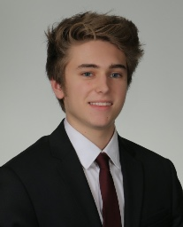

William Stone

OBJECTIVE
Sophomore Information Technology/Computer Science undergraduate seeking full-time employment for summer of 2017.
EDUCATION
- Rensselaer Poloytechnic Institute | Troy, NY
- Bachelor of Information Technology and Web Science
- Expected date of graduation: May 2019
- GPA 3.0
- Courses Include: Data Structures, Web Systems Development, Computer Organization
- Oyster River High School (ORHS), Durham, NH
- Date of graduation: June 2015
- GPA 3.6053
- Courses Include: AP Physics, AP Chemistry, AP Biology
WORK EXPERIENCE
- University of New Hampshire Survey Center
- Telephone Interviewer - CNN Presidential Primary Survey - Summer 2016
- Hannaford
- Cashier - Summer 2015
- National Aeronautics and Space Administration
- Computer Scientist (Computer Research and Development) - Summer 2017
ACHIEVEMENTS
- Inducted into National Honor Society 2013
- Honor Roll 2011-2015
- Spanish Honor Society
- Won full scholarship to Space Camp in Huntsville, AL summer 2013
- Eagle Scout 2014
- ORHS Cross Country Coach's Award 2014
- ORHS Cross Country Most Improved Award 2013
- NH Cross Country State Championship Meet medal winner 2013, 2014
- NH Interscholastic Athletic Association and NH Athletic Directors Association Scholar Athlete Award 2014
- ORHS Indoor Track Most Improved Award 2014
- Track and Field Coach's Award 2015
ACTIVITIES
- Boy Scouts 2003-2015
- Guitar 2009-present
- Volunteer with over 220 hours 2011-present
- Cross Country Varsity Team 2011-2014 - State Champions 2014 - Captain 2014
- National Honor Society member 2012-2015
- Saint Thomas Moore Youth Ministry Leadership Council 2012-2015
- Track and Field Team 2012-2015
- Math Team 2014-2015
SKILLS
Experience working with C++, C, Python, Java, HTML, CSS, Photoshop, and Microsoft Office